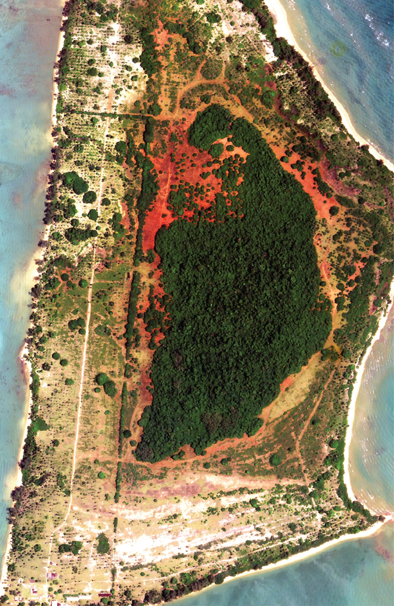
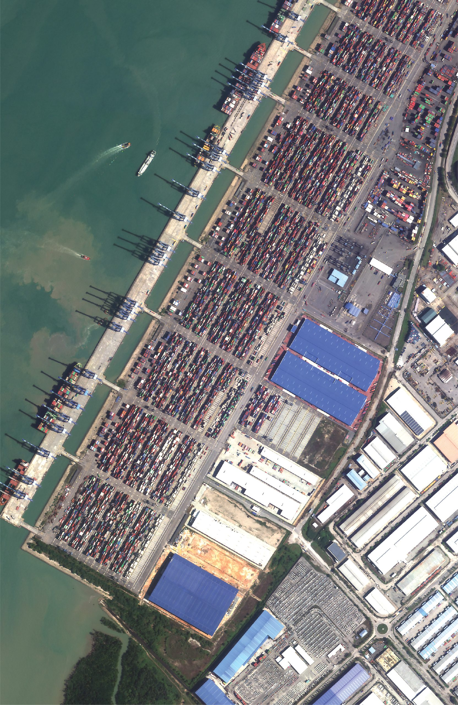
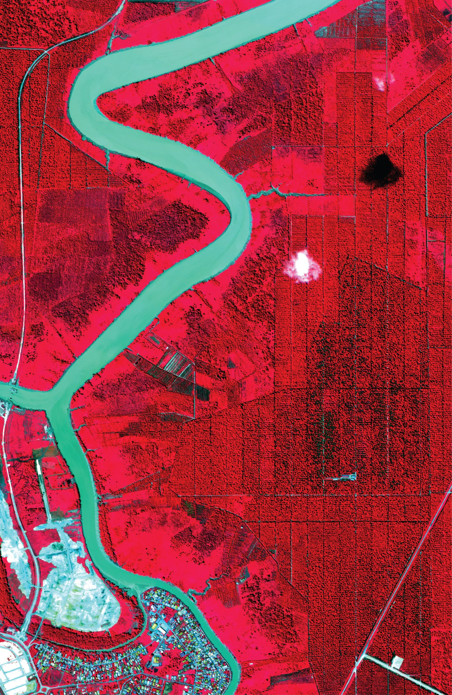
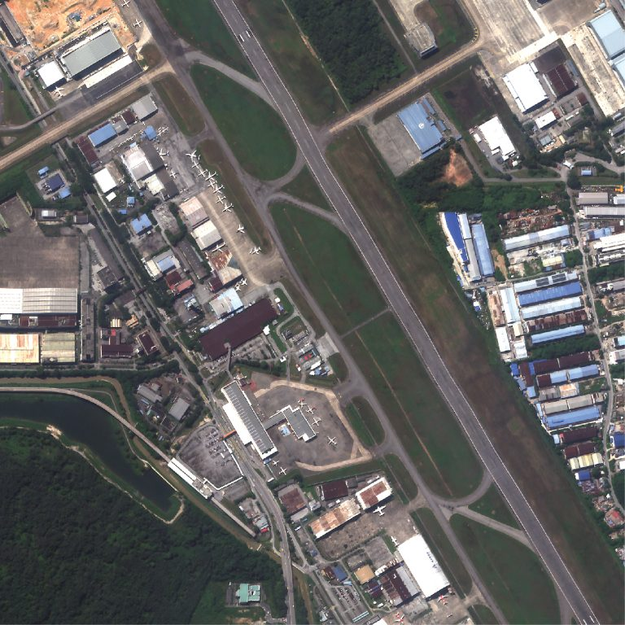
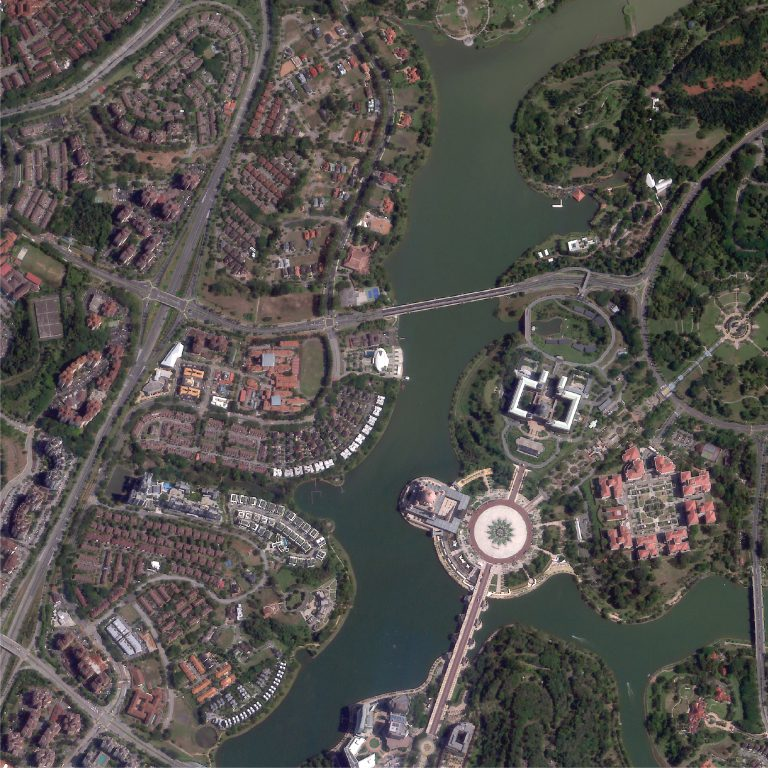
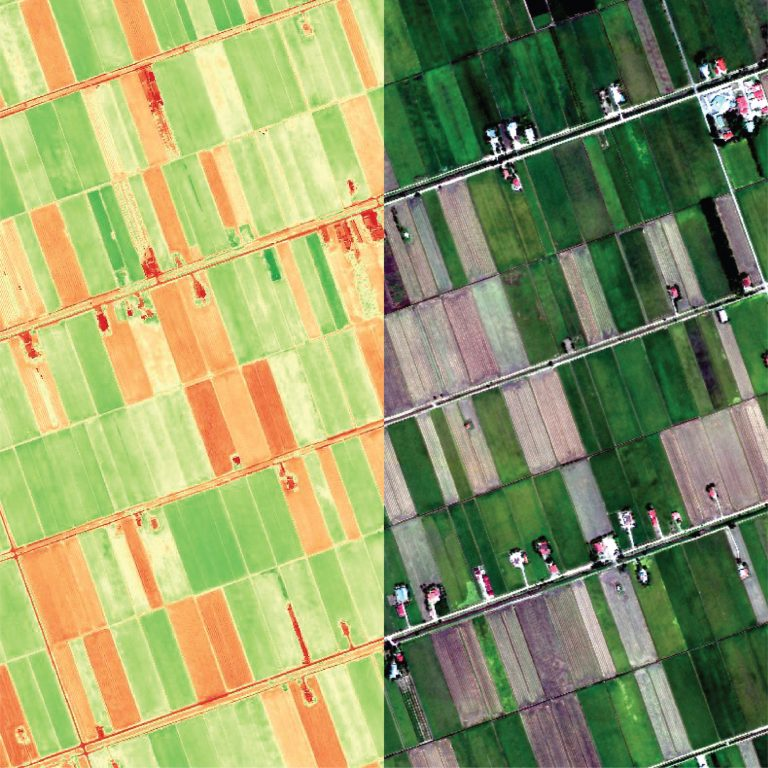
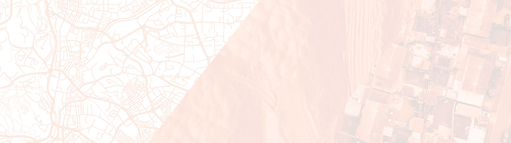

Under Development
#SeeBetter #SeeBiggerPicture #SeeTheUnseen
UZMASAT-1
UZMASAT-1
Malaysia’s first commercial very high-resolution Earth Observation (“EO”) satellite, was deployed in low earth orbit via SpaceX’s Falcon 9 Transporter 12 at exactly 4.06am on 15 January 2025, 57 minutes 35 seconds after launching from Vandenberg Space Force Base, California, US on 15 January 2025, 3.09am GMT +8.
Explore More with Us!






A New Frontier In Geospatial Intelligence
UZMASAT-1 is a collaboration between Uzma and a leading Earth Observation data collection company, Satellogic. Aiming on evolving the geospatial capabilities in Southeast Asia, the EO satellite was launched on 15 January 2025 from Vandenberg Space Force Base, California, US.
UZMASAT-1 is a collaboration between Uzma and a leading Earth Observation data collection company, Satellogic. Aiming on evolving the geospatial capabilities in Southeast Asia, the EO satellite was launched on 15 January 2025 from Vandenberg Space Force Base, California, US.

See Better

See Bigger Picture

See The Unseen
See Better
See Bigger Picture
See The Unseen
What UzmaSAT-1 do?
Satellite
Imagery
Mapping
Analytics
& Solution
Professional Training Courses
Provide satellite images and any spatial data services for various commercial, government and defense applications.
Satellite Imagery (Optical & SAR)
Digital Elevation Model (DEM)
Update and generate the most current data on digital maps and a location-based services to provide an accurate, up-to-date, data rich, detailed custom and smart mapping solutions.
Transform imagery and massive spatial datasets into critical and timely insights from analyzing your area of interest.
Provide consultancy and bespoke training course on remote sensing and GIS for various sectors.
Off-the-shelf and bespoke training tailored to your needs
What UzmaSAT-1 do?
Satellite Imagery
Provide satellite images and any spatial data services for various commercial, government and defense applications.
Satellite Imagery (Optical & SAR) Digital Elevation Model (DEM)
Mapping
Update and generate the most current data on digital maps and a location-based services to provide an accurate, up-to-date, data rich, detailed custom and smart mapping solutions.
Analytics & Solution
Transform imagery and massive spatial datasets into critical and timely insights from analyzing your area of interest.
Professional Training Course
Provide consultancy and bespoke training course on remote sensing and GIS for various sectors. Off-the-shelf and bespoke training tailored to your needs
ADVANCED
FEATURES
With the advanced features of UzmaSAT-1, we can access the best data from space to see better, see the bigger picture, see the unseen.

High Temporal Resolution
Offering frequent and consistent updates with up to 7 daily revisits
High Spatial Resolution
50 cm multispectral data with top industry-level radiometric values
Low Latency For Rapid Response
Task and access satellite imagery in under 6 hours.
Tropical Precision
Malaysia's atmospheric data calibrated efficiently for accurate insights and analysis in tropical environments
Big Data Catalyst
With a 350,000 sqkm collection capacity, AI and machine learning are empowered to transform spatial analysis
ADVANCED
FEATURES
With the advanced features of UzmaSAT-1, we can access the best data from space to see better, see the bigger picture, see the unseen.
High Temporal Resolution
Offering frequent and consistent updates with up to 7 daily revisits
High Spatial Resolution
50 cm multispectral data with top industry-level radiometric values
Low Latency For Rapid Response
Task and access satellite imagery in under 6 hours.
Tropical Precision
Malaysia's atmospheric data calibrated efficiently for accurate insights and analysis in tropical environments
Big Data Catalyst
With a 350,000 sqkm collection capacity, AI and machine learning are empowered to transform spatial analysis

Satellite Specifications
- Weight : 45.4kg
- Dimensions : 508mm x 575mm x 813mm
- Average Operational Altitude : 460km - 525km
Satellite Specifications
- Weight :
45.4kg - Dimensions :
508mm x 575mm x 813mm - Average Operational Altitude :
460km - 525km
UzmaSAT-1 Gallery
Play Play Play Play Play PlayUzmaSAT-1 Blog
Come and read UzmaSAT-1 news and press release to get
updated information about UzmaSAT-1!
UzmaSAT-1 BlogTalk to our team!
If you need help and assistance about UzmaSAT-1, our
dedicated team is happy to connect with you!
Talk To Our Team